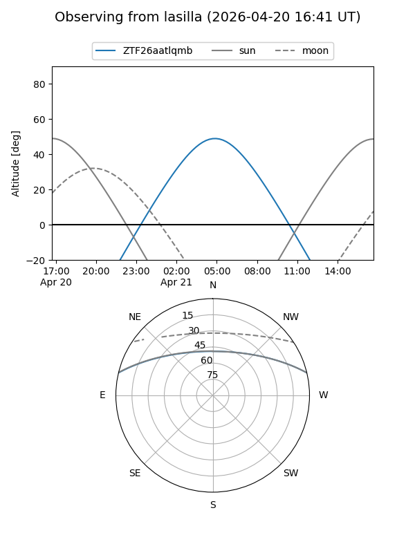
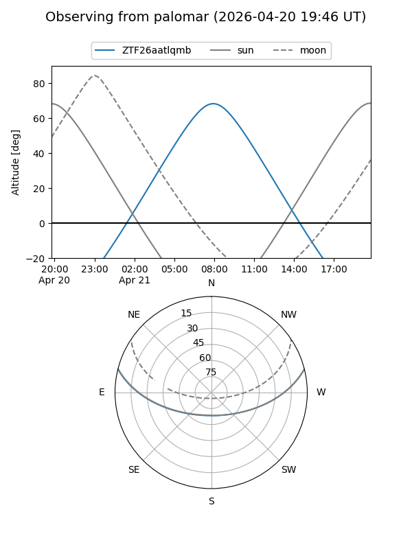

ZTF26aatlqmb
Target ZTF26aatlqmb at 2026-04-20 20:42
Aliases and brokers:
FINK: link
Lasair: link
ALeRCE: link
alt names
ZTF26aatlqmb (ztf,fink_ztf)
Coordinates:
equatorial (ra, dec) = 211.1847,+11.88055
equatorial (HMS+DMS) = 14:04:44.34,+11:52:49.98
galactic (l, b) = (354.9341,+67.01846)
Flags:
Photometry:
last ztfg=19.98
1 ztfg detections
Lightcurve
Visibility


Additional plots